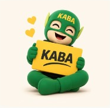
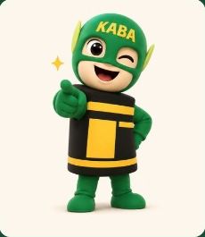
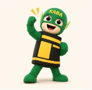
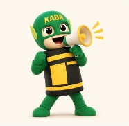

Ramah
Hadir dengan senyum dan sapaan hangat agar informasi terasa lebih dekat dan mudah dipahami.
Berakar pada Nilai, Bergerak untuk Rakyat.
MASKOT PPP
Maskot yang membawa semangat persatuan, kebersamaan, dan komunikasi yang lebih dekat dengan masyarakat.

01 / MENGENAL KABA
KABA merupakan maskot PPP yang terinspirasi dari lambang Ka'bah. Kehadirannya menggambarkan semangat persatuan dan kebersamaan melalui karakter yang ramah, ceria, dan komunikatif.
Dalam rancangan komunikasi akademik ini, KABA digunakan sebagai identitas visual dalam berbagai publikasi, dokumentasi program, dan penyampaian informasi. Karakter KABA memperkenalkan informasi organisasi melalui pendekatan visual yang mudah dipahami.
02 / KARAKTER YANG DEKAT

Hadir dengan senyum dan sapaan hangat agar informasi terasa lebih dekat dan mudah dipahami.

Membawa energi positif dalam memperkenalkan kegiatan dan berbagi informasi kepada masyarakat.

Mewakili semangat persatuan, saling mendukung, dan menjalin komunikasi dengan masyarakat.